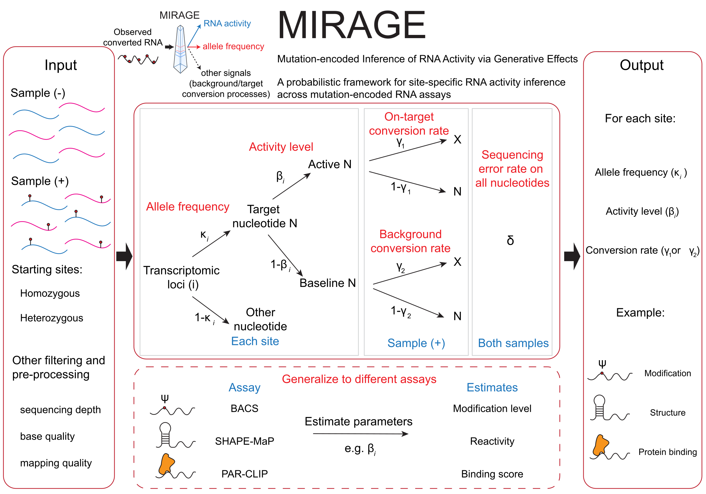

MIRAGE (Mutation-encoded Inference of RNA Activity via Generative Effects) is an R package for estimating site-level RNA activity from matched treatment and control read-count tables produced by mutation-encoded RNA assays. Many assays that read out RNA modification, RNA structure, or protein binding encode the signal of interest as a sequencing-detectable base change. The observed mismatch rate at a site is then a mixture of the treatment-induced signal, background conversion, sequencing error, and possible genetic variation. MIRAGE models this mixture generatively and infers, for every site:
- a latent activity level
beta_est(β): the fraction of molecules that carry the signal (modification stoichiometry, reactivity, or crosslinking); - the on-target conversion rate
lambda1(γ₁) and the background conversion ratelambda2(γ₂), estimated from the data or supplied; - the reference-allele fraction
kappa_est(κ) at heterozygous or allele-mixed sites, so that genetic variants are not called as signal; - per-site tests and FDR values that separate signal from background.
Because one model spans all assays, otherwise incompatible readouts are placed on a common, calibrated β scale with per-site false-discovery control.

Installation
GitHub
To install MIRAGE from GitHub and build the tutorials, run this in R:
install.packages("devtools")
devtools::install_github("yangli04/MIRAGE", build_vignettes = TRUE)Source
If you have cloned this repository locally, install it from the repository root:
install.packages("devtools")
devtools::install_local(build_vignettes = TRUE)or, for a fast install without rebuilding the tutorials:
The core dependencies (doParallel, dplyr, foreach) are declared in DESCRIPTION; ggplot2 is needed for plot_signal_scatter() and the tutorials. A ready-made micromamba environment with everything required to install the package, run the tutorials, and rebuild the documentation site is provided in envs/:
Tutorials
Three tutorials walk through one complete MIRAGE analysis each. Every tutorial reads a small, real count table that ships with the package (inst/extdata/), so they run in seconds without external data.
| tutorial | assay | what β means | source |
|---|---|---|---|
| RNA modification (BACS) | BACS pseudouridine sequencing of HeLa cytosolic rRNA | Ψ stoichiometry, compared with mass spectrometry | vignettes/mirage-bacs.Rmd |
| RNA structure (SHAPE-MaP) | 2A3 in vitro probing of E. coli 16S/23S rRNA versus DMSO | per-nucleotide reactivity, compared with the CRW secondary structure | vignettes/mirage-rna-structure.Rmd |
| Protein binding (PAR-CLIP) | MOV10 PAR-CLIP versus mock control (chr21/22 subset) | crosslink-site binding score with FDR control | vignettes/mirage-par-clip.Rmd |
After installing with build_vignettes = TRUE, the same tutorials can be opened from R:
library(MIRAGE)
vignette("mirage-bacs", package = "MIRAGE")
vignette("mirage-rna-structure", package = "MIRAGE")
vignette("mirage-par-clip", package = "MIRAGE")The tutorials use estimate_inference_with_empirical(), the motif-free workflow. The motif-aware functions compute_prior() and estimate_inference_with_prior() are documented below for users who have independent motif-prior information.
Basic MIRAGE Workflow
MIRAGE starts from one matched treatment/control count table. The table can be created by any preprocessing pipeline (for example, samtools mpileup, pileup2var, or cpup) as long as each row describes the same site in both samples.
Required columns:
| column | meaning |
|---|---|
pos |
Unique site identifier, usually chrom_coordinate_strand, such as chr1_14404_-. |
motif |
Local sequence context, typically a 5-mer using RNA alphabet A/C/G/U. |
type |
User-defined site class or motif class. |
treated_fixed_count |
Reads that match the reference/non-converted base in the treatment sample. |
treated_depth |
Total treatment read depth at the site. |
control_fixed_count |
Reads that match the reference/non-converted base in the control sample. |
control_depth |
Total control read depth at the site. |
fixed_count is the non-signal count. MIRAGE internally uses 1 - fixed_count / depth as the observed mutation or conversion rate. motif and type are only used by the motif-aware functions and can be placeholders for the empirical workflow.
library(MIRAGE)
count_table <- read.delim("path/to/site_count_table.tsv")
required <- c(
"pos", "motif", "type",
"treated_fixed_count", "treated_depth",
"control_fixed_count", "control_depth"
)
stopifnot(all(required %in% names(count_table)))
stopifnot(all(count_table$treated_fixed_count <= count_table$treated_depth))
stopifnot(all(count_table$control_fixed_count <= count_table$control_depth))Run the motif-free empirical model:
res <- estimate_inference_with_empirical(
chr.info = count_table[, c("pos", "motif", "type")],
treatment_fixed_count = count_table$treated_fixed_count,
control_fixed_count = count_table$control_fixed_count,
treatment_depth = count_table$treated_depth,
control_depth = count_table$control_depth,
delta = 0.001,
depth.cutoff = 10,
homo.cutoff = 0.99,
lambda1 = "auto",
top.sites = NULL,
bg.method = "lrt",
bg.target = "both",
highly.methyl.cutoff = 0.95,
seed = 123,
thread = 1
)Inspect and save the output:
plot_signal_scatter(res) # colored by significance
plot_signal_scatter(res, color_by = "beta_est") # shaded by inferred signal
dir.create("mirage_output", showWarnings = FALSE)
saveRDS(res, "mirage_output/mirage_result.rds")
write.table(res$homosites, "mirage_output/mirage_homosites.tsv",
sep = "\t", quote = FALSE, row.names = FALSE)
write.table(res$hetersites, "mirage_output/mirage_hetersites.tsv",
sep = "\t", quote = FALSE, row.names = FALSE)Function Guide
estimate_inference_with_empirical()
Use this function when you do not want to provide a motif prior. It estimates a shared empirical background rate and either estimates, reads from sites, or uses a fixed on-target mutation/conversion rate.
Important arguments:
-
lambda1: use"auto"to estimate the on-target rate from high-signal candidate sites,"site"to estimate it fromtop.sites, or a numeric value between 0 and 1 to fix it. -
top.sites: character vector of site IDs used only whenlambda1 = "site". -
bg.method: statistical test used to separate background and candidate signal sites. Choose"binomial","fisher", or"lrt". -
bg.target: counts used to estimate the background rate. Choose"treatment","control", or"both". -
depth.cutoff: minimum treatment and control read depth retained for inference. -
homo.cutoff: minimum control fixed-base rate used to classify a site as homozygous. -
delta: assumed sequencing error rate. -
thread: number of parallel workers. Use1for the most portable behavior.
compute_prior()
Use this function when you have independent motif information and want sequence-context priors for motif-aware MIRAGE inference.
motif_prior <- compute_prior(
motif_freq_exp = motif_freq_exp,
motif_freq_bg = motif_freq_bg,
target_motif = "NNUNN",
target_base_index = 3,
prob_methylation = 0.01
)Important inputs:
-
motif_freq_exp: data frame withmotifandfreqcolumns describing motif frequencies among known or independently measured signal sites. -
motif_freq_bg: data frame withmotif,tx_count, andgenome_countcolumns describing motif counts in the transcriptome or background search space. -
target_motif: motif pattern to treat as the target motif. MIRAGE expands supported degenerate bases internally. -
target_base_index: 1-based position of the target base withintarget_motif. -
prob_methylation: prior genome/transcriptome-wide probability that the target base carries true signal.
estimate_inference_with_prior()
Use this function when sequence context should influence the prior probability of true signal.
res <- estimate_inference_with_prior(
chr.info = chr_info,
treatment_fixed_count = count_table$treated_fixed_count,
control_fixed_count = count_table$control_fixed_count,
treatment_depth = count_table$treated_depth,
control_depth = count_table$control_depth,
motif_specific = TRUE,
delta = 0.001,
depth.cutoff = 10,
homo.cutoff = 0.99,
bg.method = "fisher",
highly.methyl.cutoff = 0.95,
ref.freq.tab = motif_prior,
seed = 123,
thread = 1,
motif = "NNUNN",
Nmer = "5mer"
)Important arguments:
-
motif_specific: ifTRUE, MIRAGE estimates motif-specific on-target rates. IfFALSE, one overall on-target rate is used while still applying the prior table. -
ref.freq.tab: motif prior table, usually fromcompute_prior(). It must contain at leastmotifandprior_methylated. -
motif: target motif pattern used to define target-context sequences. -
Nmer: how to group 5-mer target motifs for estimating motif-specific on-target rates. Choose"5mer","f4mer", or"l4mer".
Output Objects
Both inference functions return a list:
names(res)
#> "homosites" "hetersites" "lambda1" "lambda2"| object | meaning |
|---|---|
res$homosites |
Sites classified as homozygous by the control fixed-base rate. |
res$hetersites |
Sites modeled as heterozygous or allele-mixed. |
res$lambda1 |
Estimated or supplied on-target mutation/conversion rate. For motif-aware inference this can be a motif table. |
res$lambda2 |
Estimated background mutation/conversion rate. |
Common output columns include treatment_fixed_rate, control_fixed_rate, beta_est, binom_p, binom_fdr, fisher_p, fisher_fdr, lrt_p, and lrt_fdr. hetersites also includes kappa_est, the estimated allele-mixing fraction.
For downstream analysis, users commonly filter on a combination of beta_est and one of the FDR columns. Choose the test column consistently with bg.method and with the assumptions of your assay.
Example Data
The tables under inst/extdata/ used by the tutorials were derived from public data:
| file | content | source |
|---|---|---|
bacs_hela_cyrRNA_counts.tsv, bacs_hela_cyrRNA_silnas.tsv
|
pooled BACS versus untreated control T/C counts at 1,169 uridines of human cytosolic rRNA; SILNAS mass-spectrometry Ψ annotation | GEO GSE241849 (Kong et al., 2024); Taoka et al., 2018 |
shapemap_ecoli_rRNA_2A3_invitro_counts.tsv, shapemap_ecoli_rRNA_CRW_pairing.tsv
|
2A3 in vitro versus pooled DMSO mutation counts on E. coli 16S/23S rRNA; CRW base-pairing annotation | BioProject PRJNA646706; Comparative RNA Web |
parclip_mov10_chr21_chr22_counts.tsv |
MOV10 PAR-CLIP versus mock T/C counts, chromosomes 21 and 22 | GEO GSE48245 (Gregersen et al., 2014) |
pos.read.count.example.*.txt, NNANN.freq.*.txt, *.fa
|
small legacy examples used in the function documentation | — |
License
All source code and software in this repository are made available under the terms of the MIT license.